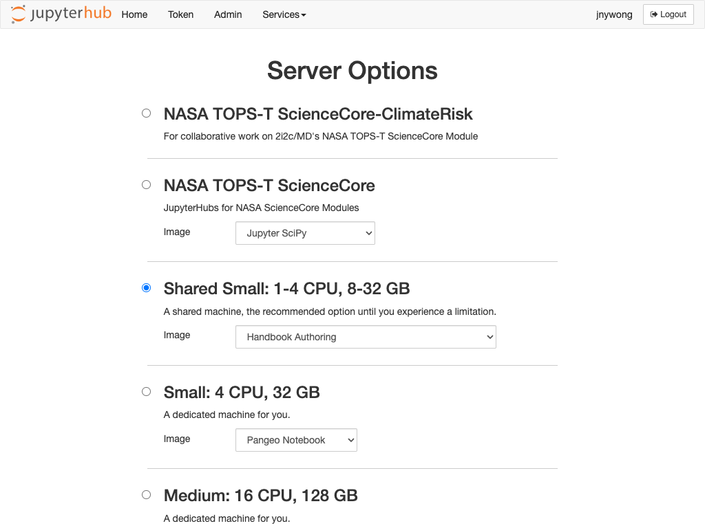

How do I Author and Preview Content using Jupyter Book?#
This guide shows you how to author and preview content using Jupyter Book within your 2i2c Managed JupyterHub Service.
Note
This use case is currrently for authoring and previewing local content only. A separate guide will follow describing how to deploy and publish Jupyter Book for other domains using the Community Showcase Hub template.
Set up Jupyter Book#
From your hub homepage, select the server option you require for your work and select the
Handbook Authoringimage from the dropdown selection box.

Once your JupyterHub service has launched, open a
Terminalfrom the launcher.In the terminal, use the command
$ jupyter-book create mynewbook
to create a template for your Jupyter Book documentation. This creates a new folder called mynewbook in your home directory, which will appear in the file explorer to the left-hand side. The contents of this template folder are as follows:
mynewbook/
├── _config.yml
├── _toc.yml
├── intro.md
├── logo.png
├── markdown-notebooks.md
├── markdown.md
├── notebooks.ipynb
├── references.bib
└── requirements.txt
The _config.yml and _toc.yml files are essential to the Jupyter Book system.
Configuration (_config.yml)#
The _config.yml is a YAML configuration file for setting various options for your Jupyter Book (see Jupyter Book docs – Configuration reference for a definitive list of options).
For the purpose of authoring a Jupyter Book on a 2i2c Managed JupyterHub service, we can leave the default settings as they are. At the very least, you may want to change the following:
title : My Community Showcase Handbook # The title of the book. Will be placed in the left navbar.
author : 2i2c # The author of the book
copyright : "2024" # Copyright year to be placed in the footer
logo : "logo.png" # A path to the book logo
Enabling extensions
And here’s my dropdown content
Table of contents (_toc.yml)#
This YAML file defines the chapter and sub-chapter structure of your Jupyter Book. The current template _toc.yml looks like this:
format: jb-book
root: intro
chapters:
- file: markdown
- file: notebooks
- file: markdown-notebooks
where the files listed above refer to the sample markdown.md, notebooks.ipynb and markdown-notebooks.md files contained within the template folder (written without the filename extensions).
Note
When adding/removing files to/from your book, remember to update the _toc.yml accordingly.
For a definitive guide to structuring your Jupyter Book, including parts, sections and custom titles, please refer to the Jupyter Book docs – Structure the Table of Contents.
Edit content#
The content of your book can consist of the following file types:
Markdown
.md– a type of markup language. Jupyter Book supports MyST Markdown.Jupyter notebook
.ipynb– the standard computational notebook format.MyST Markdown Notebooks
.md– text-based Jupyter notebook written in MyST markdown.reStructuredText
.rst– a Sphinx-supported flavour of Markdown (see How Jupyter Book and Sphinx relate to one another).
Exercise
Try editing the sample files in the template folder to familiarise yourself with the different file types. If you are unfamiliar with MyST Markdown, then try formatting some text using this guide.
Build and preview your Jupyter Book#

From a terminal, execute the command
$ jupyter-book build mynewbook
to build your Jupyter Book, which generates HTML files from your content and places them in the mynewbook/_build/html/ folder.
Open a new terminal and navigate to the HTML folder using the command
$ cd mynewbook/_build/html
Run a simple Python webserver with the command
$ python -m http.server
Preview your documentation website in an iFrame within JupyterLab
By clicking
View > Activate Command Palettein the menu barSearch for the
Open iFramecommandCopy and paste the following URL (edit as required) into the
Open Sitetextbox
https://<your-hub-url>/user/<your-username>/proxy/8000/index.html
Edit and rebuild#
After editing content files in your Jupyter Book, you will need to re-build the HTML pages using the command from Step 1, and then refresh your iFrame/website to preview your changes.
Tip
If your book’s Table of Contents doesn’t update after changing the _toc.yml file, try:
$ jupyter-book build --all mynewbook
which rebuilds all files and not just modified files only.